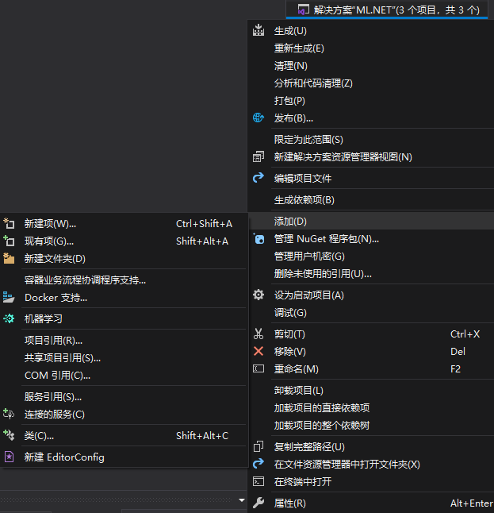
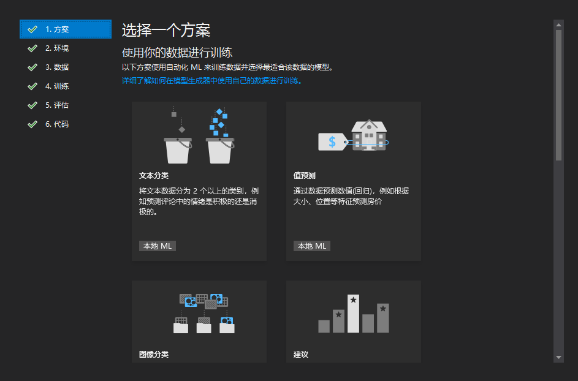
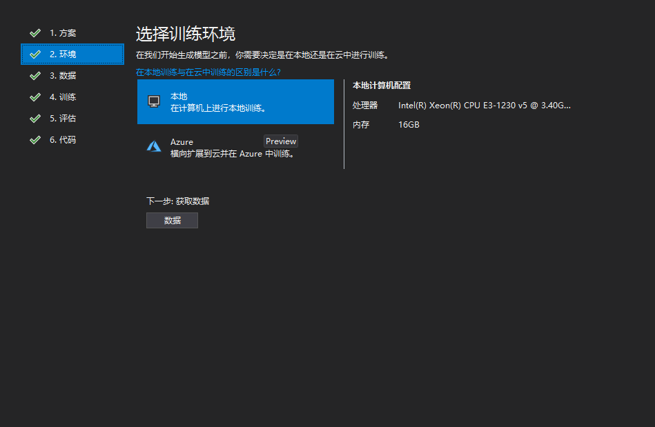
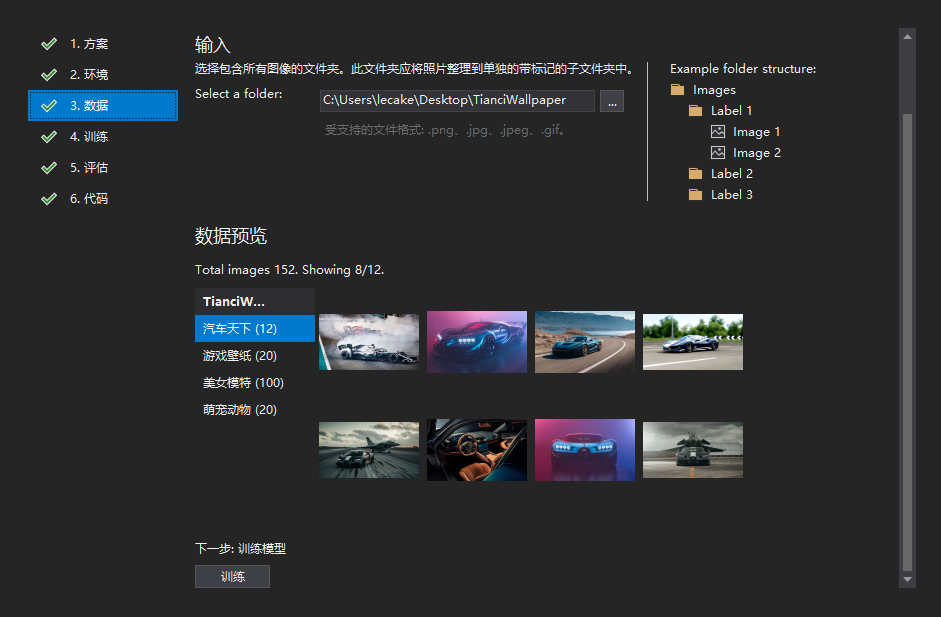
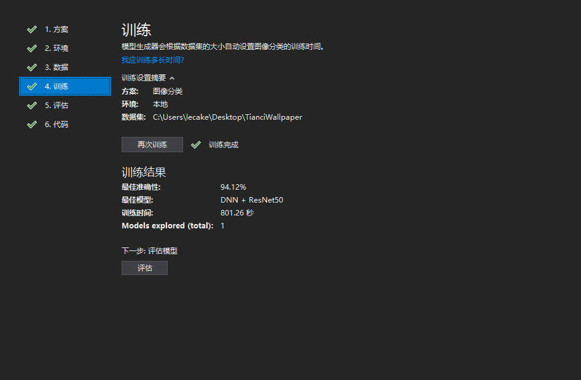
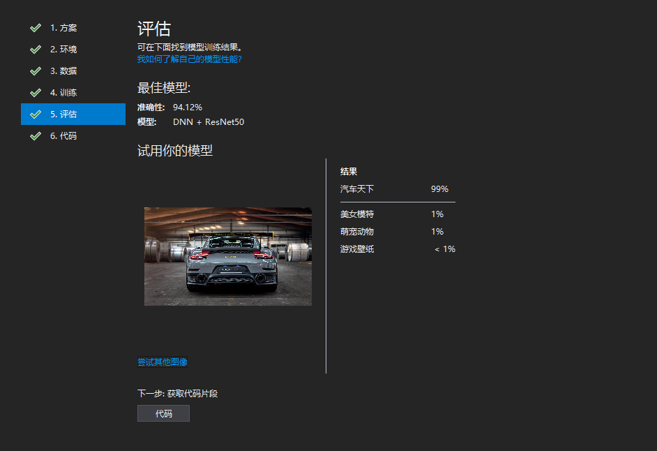
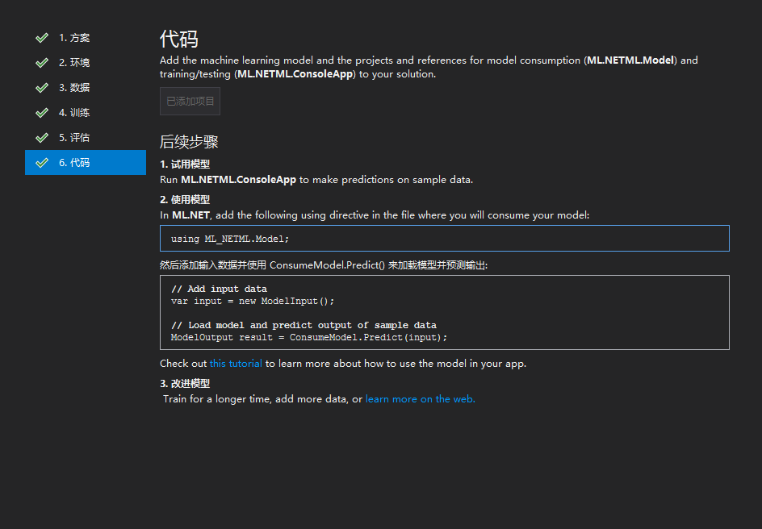
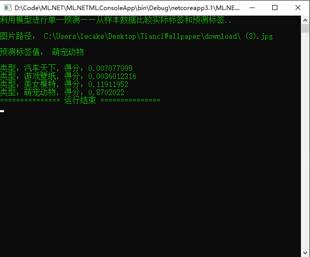

# 什么是 ML.NET，官方文档给出解释如下
-
ML.NET 使你能够在联机或脱机场景中将机器学习添加到 .NET 应用程序中。 借助此功能，可以使用应用程序的可用数据进行自动预测。 机器学习应用程序利用数据中的模式来进行预测，而不需要进行显式编程。
-
ML.NET 的核心是机器学习模型 。 该模型指定将输入数据转换为预测所需的步骤。 借助 ML.NET，可以通过指定算法来训练自定义模型，也可以导入预训练的 TensorFlow 和 ONNX 模型。
-
拥有模型后，可以将其添加到应用程序中进行预测。
# 意思就是可以脱机训练模型，让程序拥有自主判断意识
# 第一步创建一个机器学习模型，在一个新项目中右击添加机器学习

# 选择一个方案，这边选择图像分类

# 选择环境，因为没有 Azure 上的数据所以选择本地文件夹

# 这边选择的图片有点多，分为四个类型

# 点击训练，如果图片太多训练时间也会变长，这边已经训练好了

# 训练完成可以选择一张本地图片来进行分析

# 最后可以将代码添加到本地，查看运行逻辑以及生成的文件

# 打开 ConsoleApp.Program.cs 文件修改
ModelInput sampleData = new ModelInput() | |
{ | |
ImageSource = "可填本地任意图片路径" | |
}; |
# 我这边下载了很多图片进行循环分析
